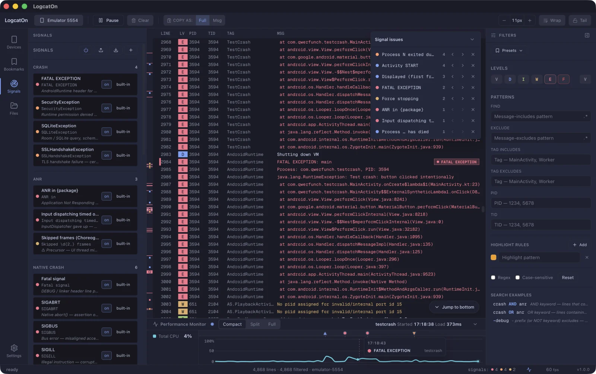
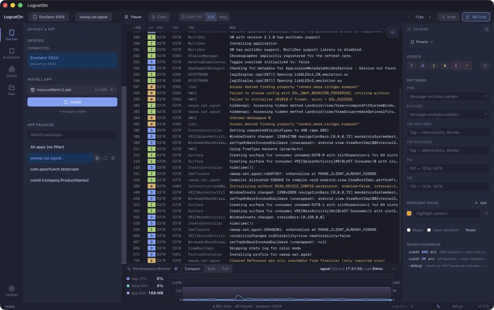
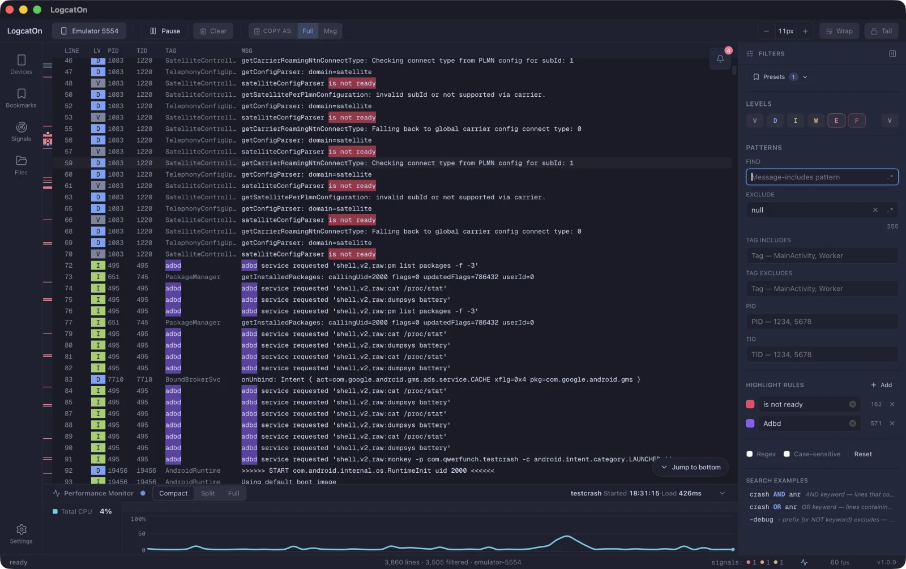
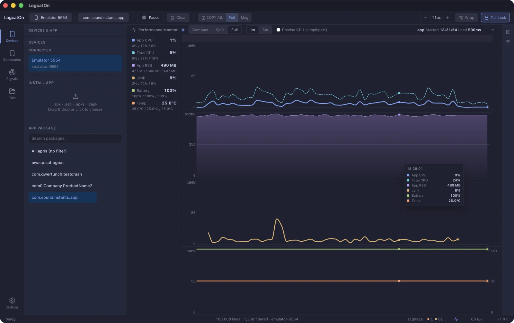
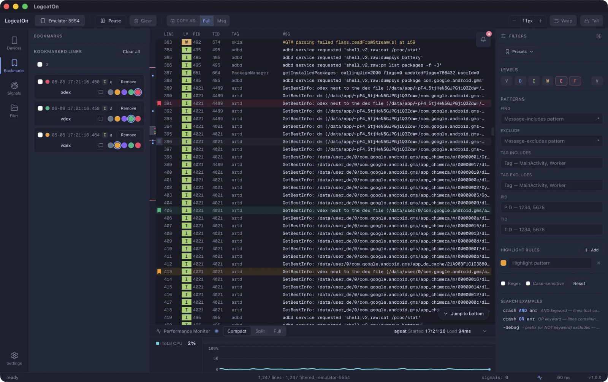

Crashes, ANRs and native faults land on the minimap and timeline the moment they happen. One click takes you there. Large logs keep flowing without a stutter.
A crash lands mid-flood, marks the minimap, and we jump right to it. Recorded in one take.

We didn't list features. We laid out the screen in the order you read logs.
Connect a device and pick an app to see just its logs. Install, launch, and force-stop, all in one place.
Find, exclude, tag, PID and level filters — plus regex and AND/OR search.
Shown on the minimap, signal issues, and timeline — click to jump straight there.
Monitor CPU, memory, jank, battery and temperature alongside your logs.
Bookmark key lines, tag them by color, and jump back in an instant.




JSON buried in a log line folds and unfolds. Switch between Pretty and Raw, then copy it as is.
Point Retrace at your mapping file and unreadable stack traces come back with their original names.
The crash region is detected for you. One right-click copies it with device and OS info attached.
Mark the lines that matter, group them by color, and come back anytime.
Give the tags you watch their own colors and your eye finds them mid-scroll.
Crashes, ANRs, native faults and memory are caught by rule. You can add your own rules too.